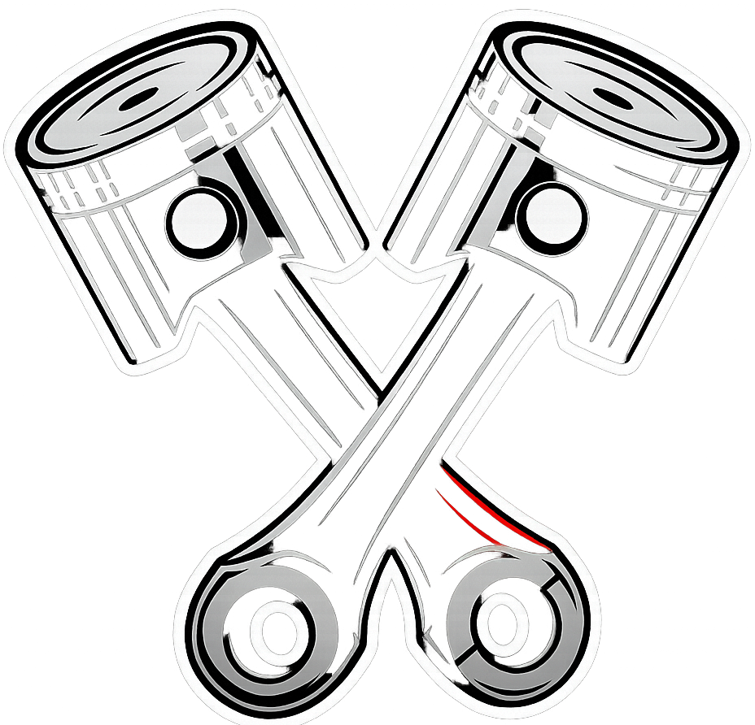
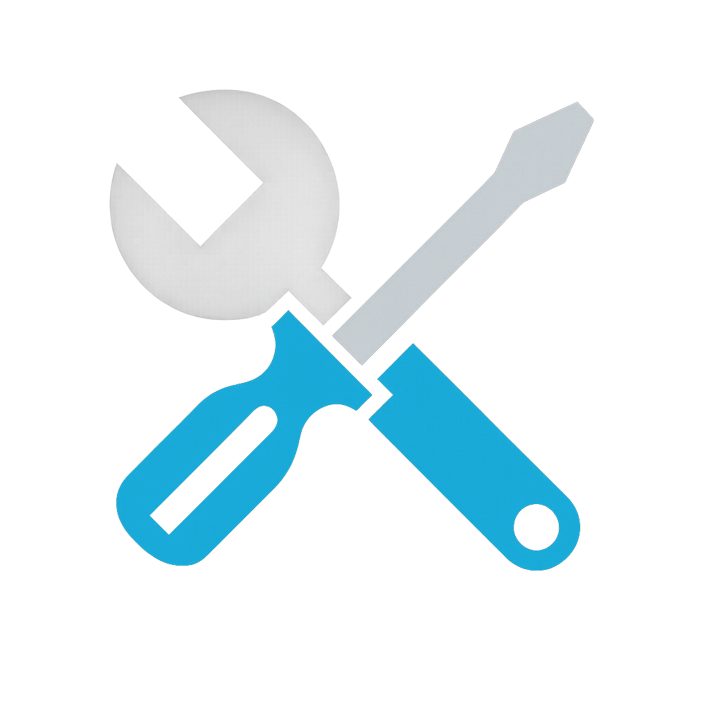
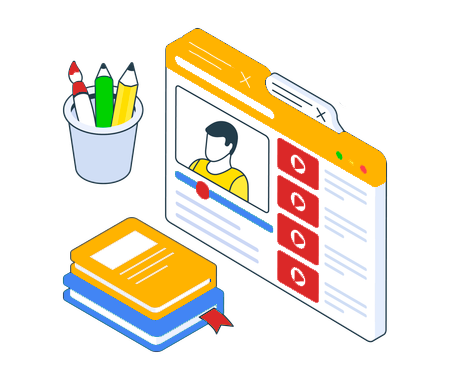
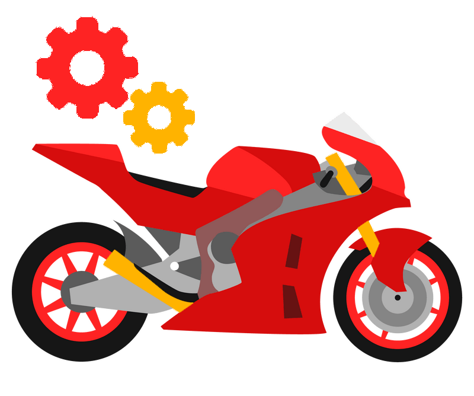
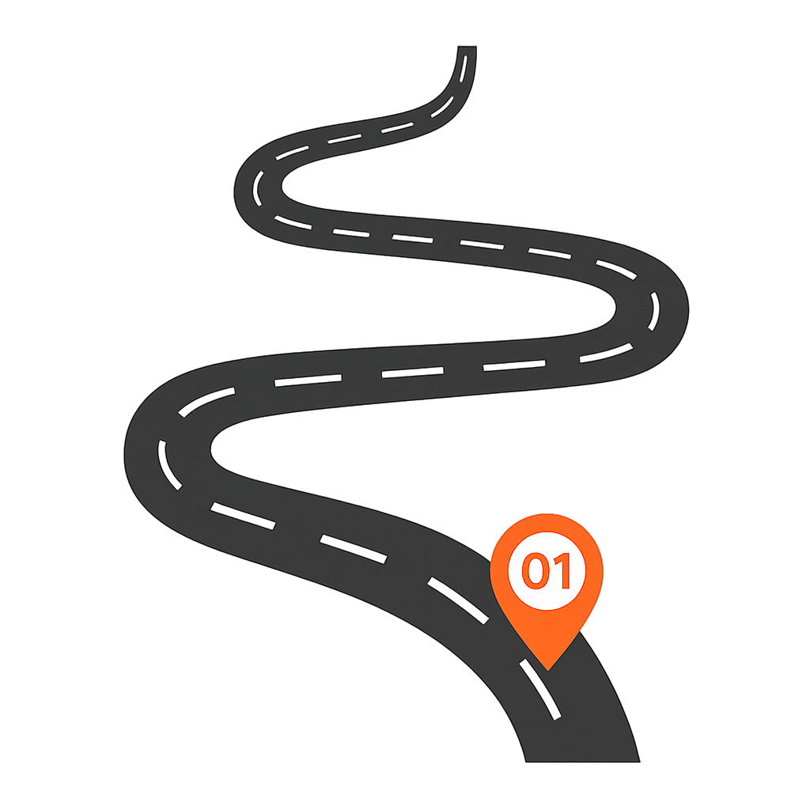
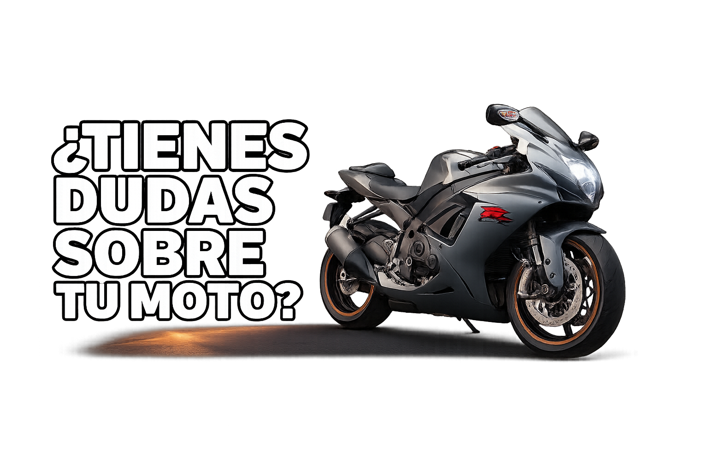

¿Que es MotoWiki y quienes somos?
MotoWiki es una iniciativa enfocada en brindar conocimiento claro, práctico y accesible sobre motocicletas, pensada para apoyar a quienes utilizan en su vida diaria. Surge como respuesta a la falta de información confiable sobre aspectos fundamentales como la compra, el mantenimiento preventivo y el funcionamiento básico de estos vehículos. Detrás de MotoWiki hay un equipo comprometido con la seguridad y la educación vial en Colombia, que entiende la motocicleta no solo como un medio de transporte, sino como una herramienta de trabajo y una parte importante del día a día de muchas personas. Por ello, se busca facilitar el acceso a información útil que permita a los motociclistas tener más conocimiento para prevenir fallas mecánicas y cuidar mejor su vehículo.

“Más vale prevenir que curar" (Benjamin Franklin) “Para comprender la seguridad no hay que enfrentarse a ella, sino incorporarla a uno mismo.” Allan Watts (1915 – 1973)
¿Por qué usar MotoWiki?
MotoWiki te permite entender mejor tu motocicleta y tomar decisiones más seguras en su uso, mantenimiento y compra, evitando errores comunes que pueden asegurar riesgos o gastos innecesarios.

Razon 1
Ayuda a identificar problemas a tiempo y saber que revisar, reduciendo riesgos en la vía.

Razon 2
Facilita el mantenimiento básico y evita reparaciones costosas por descuido.
Razon 3
Brinda información clara para evaluar tu moto y hacer elecciones más seguras.
Así es cómo funciona

Tips y tutoriales
Tenemos en cuenta tu opinión por eso pensamos las dudas principales y te damos la solución.

Nuestro vehículo
Cada parte de nuestra moto es importante tenemos un apartado donde conocerás mas de cada una de ella
Información actualizada
En conjunto con nuestra api te brindaremos información al detalle y actualizada para q conozcas todo sobre la gran variedad de modelos que hay
Nuestra misión
En MotoWiki nos dedicamos a brindar información clara, práctica y accesible sobre motocicletas, con el propósito de apoyar a quienes dependen de ellas en su vida diaria. Buscamos cerrar la brecha de desinformación existente en temas clave como la compra, el mantenimiento preventivo y el funcionamiento básico, ofreciendo contenido confiable que permita a los motociclistas tomar decisiones más informadas y seguras.
BNuestro compromiso es contribuir a la educación y seguridad vial en Colombia, entendiendo la motocicleta no solo como un medio de transporte, sino como una herramienta de trabajo y una parte esencial del día a día. A través de MotoWiki, promovemos el cuidado responsable del vehículo, la prevención de fallas mecánicas y la reducción de riesgos y gastos innecesarios.

Principales preguntas sobre MotoWiki

¿La información de MotoWiki está actualizada?
Sí. Gracias a nuestra integración con una API de motocicletas, la información sobre modelos y especificaciones se mantiene actualizada constantemente..
¿MotoWiki es gratuito?
Completamente. MotoWiki es una plataforma de acceso libre pensada para que cualquier persona pueda informarse sobre el mundo de las motocicletas sin ningún costo.
¿Puedo usar MotoWiki si soy principiante y no sé nada de motos?
¡Claro! MotoWiki está diseñado tanto para principiantes como para entusiastas. Todo el contenido está explicado de forma clara y sencilla para que cualquiera pueda entenderlo.
La Agencia Nacional de Seguridad Vial (ANSV) identifica que las principales fallas técnico-mecánicas causantes de siniestros son deficiencias en frenos, llantas y sistema de dirección. Se estima que el nivel de riesgo de sufrir un accidente es de hasta el 70% para los conductores de motocicleta Saber más